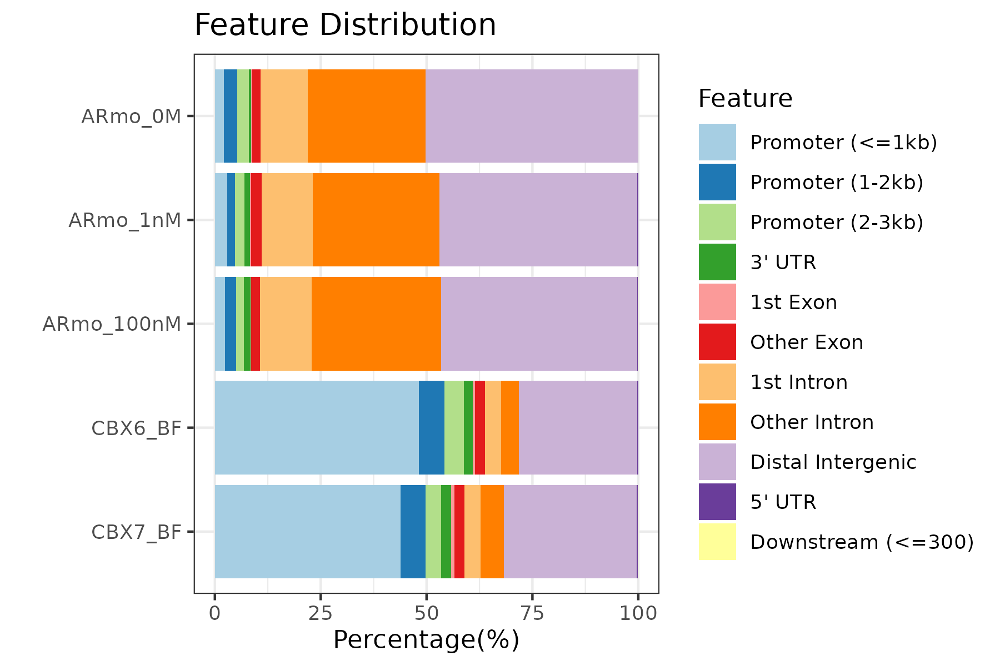
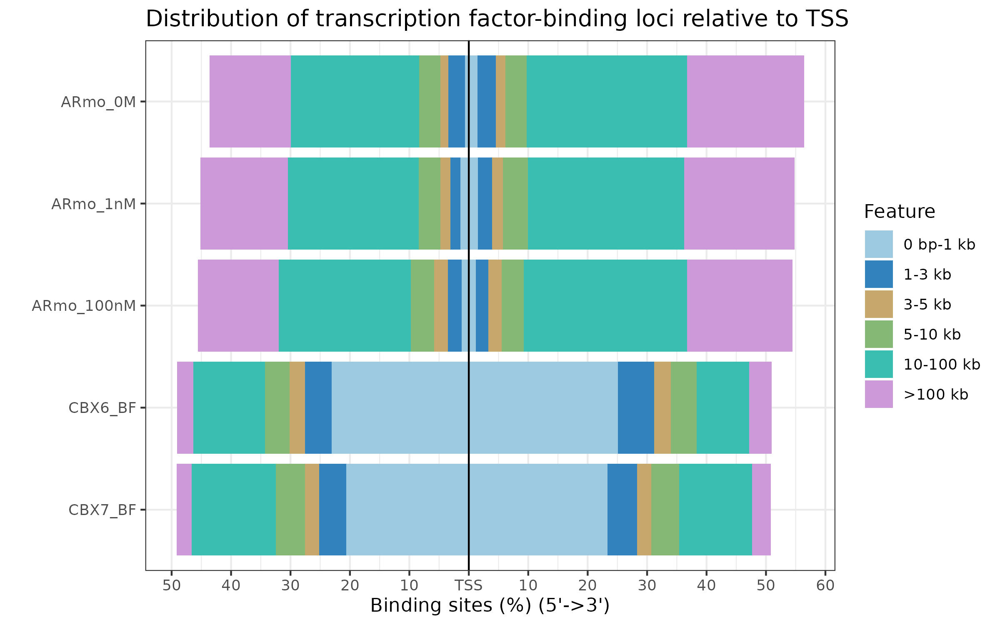
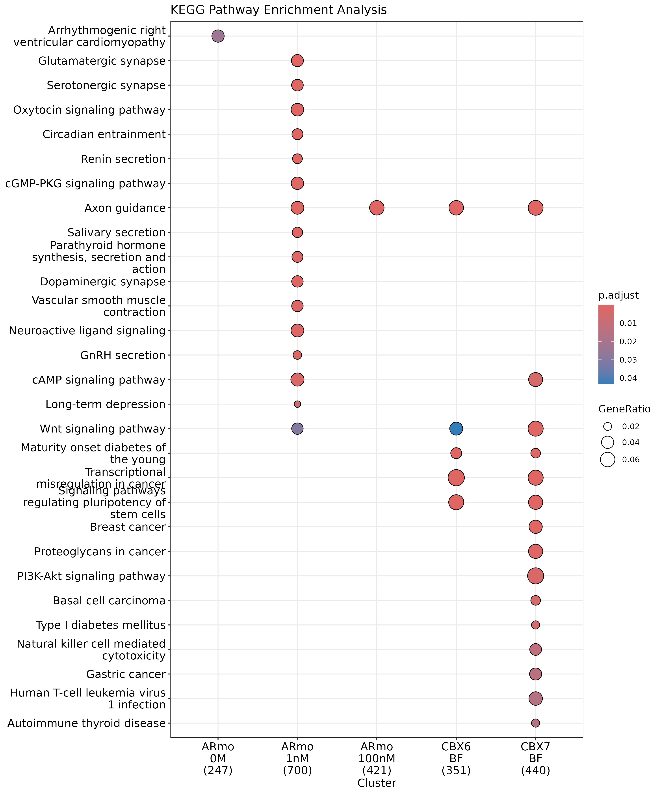
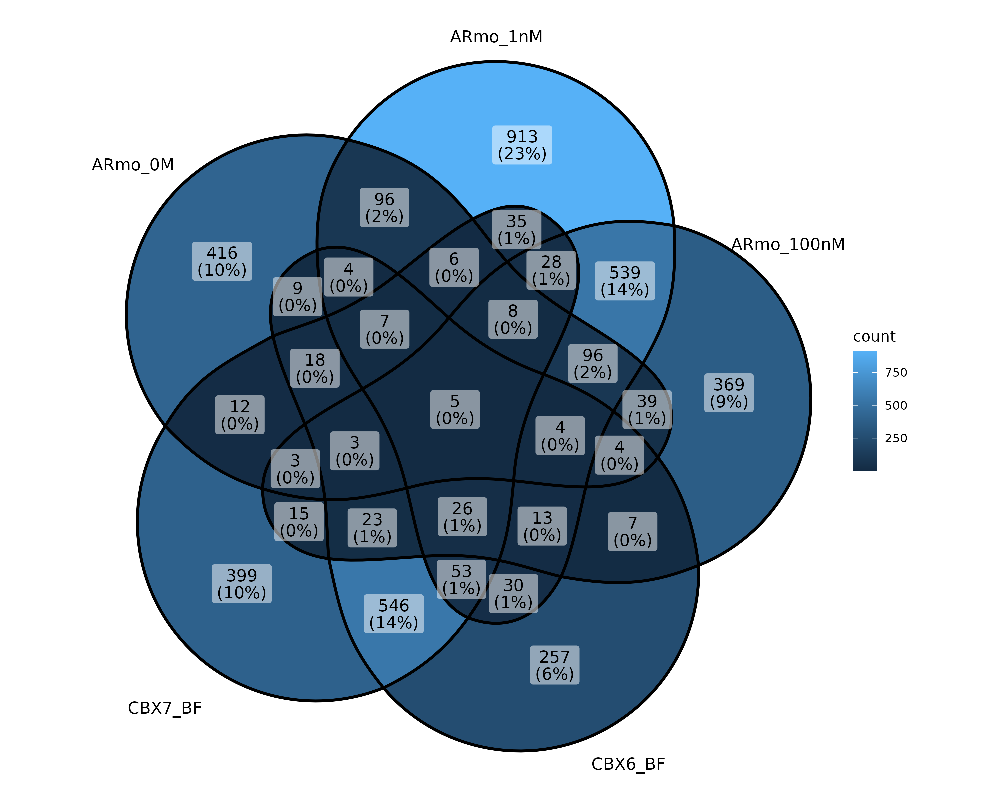

peakAnnoList <- lapply(files, annotateSeq, TxDb=txdb,
tssRegion=c(-3000, 3000), verbose=FALSE)6 ChIP peak data set comparison
6.1 ChIP peak annotation comparision
The plotAnnoBar and plotDistToTSS can also accept input of a named list of annotated peaks (output of annotateSeq).
We can use plotAnnoBar to comparing their genomic annotation. ::: {.cell hash=‘05-Comparison_cache/html/plotAnnoBar-list_a9f3193a6cbe701e3f46093f2d85266b’}
plotAnnoBar(peakAnnoList):::

R function plotDistToTSS can use to comparing distance to TSS profiles among ChIPseq data. ::: {.cell hash=‘05-Comparison_cache/html/plotDistToTSS-list_25e37e1a42df1dd8ed8d995d21eab68a’}
plotDistToTSS(peakAnnoList):::

6.2 Functional profiles comparison
As shown in section 4, the annotated genes can analyzed by r Biocpkg("clusterProfiler")(Yu et al. 2012), r Biocpkg("DOSE")(Yu et al. 2015), meshes and r Biocpkg("ReactomePA") for Gene Ontology, KEGG, Disease Ontology, MeSH and Reactome Pathway enrichment analysis.
The clusterProfiler(Yu et al. 2012) package provides compareCluster function for comparing biological themes among gene clusters, and can be easily adopted to compare different ChIP peak experiments.
genes <- lapply(peakAnnoList, function(i) as.data.frame(i)$geneId)
names(genes) <- sub("_", "\n", names(genes))
compKEGG <- compareCluster(geneCluster = genes,
fun = "enrichKEGG",
pvalueCutoff = 0.05,
pAdjustMethod = "BH")
dotplot(compKEGG, showCategory = 15, title = "KEGG Pathway Enrichment Analysis")
6.3 Overlap of peaks and annotated genes
User may want to compare the overlap peaks of replicate experiments or from different experiments. ChIPseeker provides peak2GRanges that can read peak file and stored in GRanges object. Several files can be read simultaneously using lapply, and then passed to vennplot to calculate their overlap and draw venn plot.
vennplot accept a list of object, can be a list of GRanges or a list of vector. Here, I will demonstrate using vennplot to visualize the overlap of the nearest genes stored in peakAnnoList.
genes <- lapply(peakAnnoList, function(i) as.data.frame(i)$geneId)
vennplot(genes)
7 Statistical testing of ChIP seq overlap
Overlap is very important, if two ChIP experiment by two different proteins overlap in a large fraction of their peaks, they may cooperative in regulation. Calculating the overlap is only touch the surface. ChIPseeker implemented statistical methods to measure the significance of the overlap.
7.1 Shuffle genome coordination
p <- GRanges(seqnames=c("chr1", "chr3"),
ranges=IRanges(start=c(1, 100), end=c(50, 130)))
shuffle(p, TxDb=txdb)
## GRanges object with 2 ranges and 0 metadata columns:
## seqnames ranges strand
## <Rle> <IRanges> <Rle>
## [1] chr1 172715894-172715943 *
## [2] chr3 32242432-32242462 *
## -------
## seqinfo: 2 sequences from an unspecified genome; no seqlengthsWe implement the shuffle function to randomly permute the genomic locations of ChIP peaks defined in a genome which stored in TxDb object.
7.2 Peak overlap enrichment analysis
With the ease of this shuffle method, we can generate thousands of random ChIP data and calculate the background null distribution of the overlap among ChIP data sets.
enrichPeakOverlap(queryPeak = files[[5]],
targetPeak = unlist(files[1:4]),
TxDb = txdb,
pAdjustMethod = "BH",
nShuffle = 50,
chainFile = NULL,
verbose = FALSE)
## qSample
## ARmo_0M GSM1295077_CBX7_BF_ChipSeq_mergedReps_peaks.bed.gz
## ARmo_1nM GSM1295077_CBX7_BF_ChipSeq_mergedReps_peaks.bed.gz
## ARmo_100nM GSM1295077_CBX7_BF_ChipSeq_mergedReps_peaks.bed.gz
## CBX6_BF GSM1295077_CBX7_BF_ChipSeq_mergedReps_peaks.bed.gz
## tSample qLen tLen N_OL
## ARmo_0M GSM1174480_ARmo_0M_peaks.bed.gz 1663 812 0
## ARmo_1nM GSM1174481_ARmo_1nM_peaks.bed.gz 1663 2296 8
## ARmo_100nM GSM1174482_ARmo_100nM_peaks.bed.gz 1663 1359 3
## CBX6_BF GSM1295076_CBX6_BF_ChipSeq_mergedReps_peaks.bed.gz 1663 1331 968
## pvalue p.adjust
## ARmo_0M 0.82352941 0.82352941
## ARmo_1nM 0.17647059 0.35294118
## ARmo_100nM 0.33333333 0.44444444
## CBX6_BF 0.01960784 0.07843137Parameter queryPeak is the query ChIP data, while targetPeak is bed file name or a vector of bed file names from comparison; nShuffle is the number to shuffle the peaks in targetPeak. To speed up the compilation of this vignettes, we only set nShuffle to 50 as an example for only demonstration. User should set the number to 1000 or above for more robust result. Parameter chainFile are chain file name for mapping the targetPeak to the genome version consistent with queryPeak when their genome version are different. This creat the possibility of comparison among different genome version and cross species.
In the output, qSample is the name of queryPeak and qLen is the the number of peaks in queryPeak. N_OL is the number of overlap between queryPeak and targetPeak.
Yu, Guangchuang, Li-Gen Wang, Yanyan Han, and Qing-Yu He. 2012. “clusterProfiler: An r Package for Comparing Biological Themes Among Gene Clusters.” OMICS: A Journal of Integrative Biology 16 (5): 284–87. https://doi.org/10.1089/omi.2011.0118.
Yu, Guangchuang, Li-Gen Wang, Guang-Rong Yan, and Qing-Yu He. 2015. “DOSE: An r/Bioconductor Package for Disease Ontology Semantic and Enrichment Analysis.” Bioinformatics 31 (4): 608–9. https://doi.org/10.1093/bioinformatics/btu684.